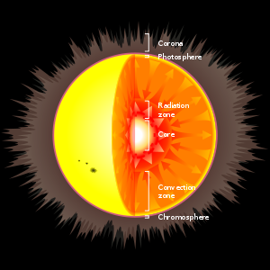

Güneşin Yapısı

Bir Cevap Yazın
<
Güneş bir sarı cücedir. Güneş Sistemi’nin toplam kütlesinin yaklaşık % 99′unu oluşturur. Güneş hemen hemen mükemmel bir küre şeklindedir, basıklığı yalnızca 9 milyonda birdir,[18] yani kutuplararası çapı ile ekvator çapı arasında bulunan fark yalnızca 10 km.’dir. Güneş plazma hâlindedir ve katı değildir; dolayısıyla kendi ekseni etrafında dönerken kademeli olarak döner, yani ekvatorda kutuplarda olduğundan daha hızlı döner. Bu gerçek dönüşün periyodu ekvatorda 25 gün, kutuplarda 35 gündür. Ancak Dünya Güneş’in etrafında dönerken gözlem noktamız sürekli değiştiği için Güneş’in görünür dönüşü ekvatorda yaklaşık 28 gün kadardır. Bu yavaş dönüşün merkezkaç etkisi Güneş’in ekvatorunda yüzey çekiminden 18 milyon kat daha güçsüzdür. Aynı zamanda gezegenlerden kaynaklanan gelgit etkisi Güneş’in şeklini belirgin derecede etkilemez.
Kayalık gezegenlerde olduğu gibi Güneş’in belirli sınırları yoktur. Dış katmanlarında, merkezinden uzaklaştıkça gaz yoğunluğu üstel olarak azalır. Ancak aşağıda açıklandığı gibi Güneş’in belirgin bir iç yapısı bulunur. Güneş’in yarıçapı merkezinden ışık küresinin (fotosfer) kenarına kadar ölçülür. Bu hemen yukarısında gazların önemli miktarda ışık saçamayacak kadar çok soğuk ya da çok ince olduğu katmandır. Işık yuvarı çıplak gözle görülen yüzeydir. Güneş çekirdeği toplam hacminin yüzde 10′una ama toplam kütlesinin yüzde 40′ına sahiptir.